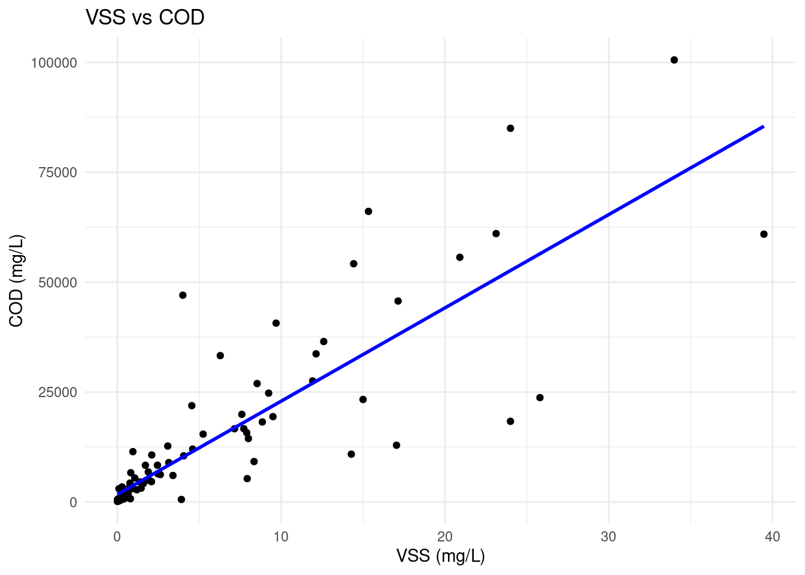

The goal of fecalcanuga is to provide data representing 5 months of field work from April - June 2023 (Canada) and January - February 2024 (Uganda) collecting household and commercial wastewater containment data and characterizing physical, chemical and greenhouse gas data for 22 non-sewered sanitation sites on southern Vancouver island and the southern gulf islands in British Columbia, Canada and 19 sites in Kampala, Uganda.
Installation
You can install the development version of fecalcanuga from GitHub with:
# install.packages("devtools")
devtools::install_github("kelseyshaw/fecalcanuga")
## Run the following code in console if you don't have the packages
## install.packages(c("dplyr", "knitr", "readr", "stringr", "gt", "kableExtra"))
library(dplyr)
library(knitr)
library(readr)
library(stringr)
library(gt)
library(kableExtra)Alternatively, you can download the individual datasets as a CSV or XLSX file from the table below.
| dataset | CSV | XLSX |
|---|---|---|
| containment | Download CSV | Download XLSX |
| ghg | Download CSV | Download XLSX |
| household_survey | Download CSV | Download XLSX |
| phys_chem_parameter | Download CSV | Download XLSX |
Data
The package provides access to 4 datasets: containment, ghg, household_survey, and phys_chem_parameter.
containment
The dataset containment contains data about the technical data (containment size, volume, fecal sludge depth, etc.) for each non-sewered sanitation system containment that was sampled as a part of this field work. It has 41 observations and 10 variables
containment |>
head(3) |>
gt::gt() |>
gt::as_raw_html()| sample_id | location_id | date | area | sludge_depth | containment_depth | containment_volume | fs_volume | accumulation_rate | scum_depth |
|---|---|---|---|---|---|---|---|---|---|
For an overview of the variable names, see the following table.
| variable_name | variable_type | description |
|---|---|---|
| sample_id | factor | unique identifier for each sampling location in the format ##-Location-ddmmyyyy |
| location_id | factor | unique location identifier for each sampling day in the format of (#)-day of sampling (a) - location in that day |
| date | c(“POSIXct”, “POSIXt”) | date of sampling |
| area | numeric | surface area of liquid surface in containment m^2 |
| sludge_depth | numeric | depth in meters, of where from the top of the sludge the sample was taken |
| containment_depth | numeric | depth in meters, from the top of the containment to the bottom of the containment |
| containment_volume | numeric | total volume of the containment in m^3 |
| fs_volume | numeric | total volume of the sludge in containment in m^3 |
| accumulation_rate | numeric | the accumulation rate in litres/capita -year (based on total volume and number of users) |
| scum_depth | numeric | the depth of the top scum layer in centimeters |
ghg
The dataset ghg contains data about the calculated mass flux rates from the measured point-source in situ GHG measurments and the observed person equivalents for each containment for the three key greenhouse gases (CH4, CO2 and N2O). It has 41 observations and 7 variables
ghg |>
head(3) |>
gt::gt() |>
gt::as_raw_html()| sample_id | location_id | date | users | flux_ch4 | flux_co2 | flux_n20 |
|---|---|---|---|---|---|---|
For an overview of the variable names, see the following table.
| variable_name | variable_type | description |
|---|---|---|
| sample_id | factor | unique identifier for each sampling location in the format ##-Location-ddmmyyyy |
| location_id | factor | unique location identifier for each sampling day in the format of (#)-day of sampling (a) - location in that day |
| date | c(“POSIXct”, “POSIXt”) | date of sampling |
| users | numeric | average number of users for the sanitation system that was sampled |
| flux_ch4 | numeric | methane flux in grams/capita-day - based on number of users |
| flux_co2 | numeric | carbon dioxide flux in gram/capita-day - based on number of users |
| flux_n20 | numeric | nitrious oxide flux in gram/capita-day - based on number of users |
household_survey
The dataset household_survey contains data about the collected household / institutional survey data for each location where a non-sewered sanitation containmenet was sampled. This includes demographic infromation, operational and maintenance information and some technical and environmental parameters. It has 41 observations and 39 variables
household_survey |>
head(3) |>
gt::gt() |>
gt::as_raw_html()| sample_id | location_id | date | local_area_name | establishment_type | users | last_emptied | shared_toilet | rent_or_own | containment | lining | lining_material | change_in_liquid_level | baffles | outflow | outflow_location | toilet_type | anal_cleansing_material | paper | water | additives | frequency | chemicals | wastewater_type | toilet | bathing | laundry | kitchen | water_connection | tap_inside_building | standpipe | containment_age | containment_constructed | containment_volume | fully_emptied | emptying_interval | rainy_season | solid_waste | type |
|---|---|---|---|---|---|---|---|---|---|---|---|---|---|---|---|---|---|---|---|---|---|---|---|---|---|---|---|---|---|---|---|---|---|---|---|---|---|---|
For an overview of the variable names, see the following table.
| variable_name | variable_type | description |
|---|---|---|
| sample_id | factor | unique identifier for each sampling location in the format ##-Location-ddmmyyyy |
| location_id | factor | unique location identifier for each sampling day in the format of (#)-day of sampling (a) - location in that day |
| date | c(“POSIXct”, “POSIXt”) | date of sampling |
| local_area_name | factor | community / area name that locals commonly use where samples were taken |
| establishment_type | factor | type of establishment where sampling occurred (household, commercial, school, office building, other) |
| users | numeric | average number of users for the sanitation system that was sampled |
| last_emptied | numeric | in years how long ago from sampling date the containment was last emptied |
| shared_toilet | logical | Is the toilet(s) connected to the sanitation containment shared or not? |
| rent_or_own | factor | Is the establishment where the containment is rented or owned by the head of household? |
| containment | factor | The type of containment (septic tank, pit latrine, treatment plant unit, etc.) |
| lining | factor | The type of containment lining (fully lined, unlined, don’t know) |
| lining_material | factor | The material the lining is made of if it is lined (fiberglass, concreate, PVC, unlined, etc.) |
| change_in_liquid_level | logical | Is there a change in liquid level due to seasonal variation? |
| baffles | logical | Are there baffles in the containment? |
| outflow | logical | Is there an outflow for the containment? |
| outflow_location | factor | If there is an outflow, where is it located (i.e., leech field) |
| toilet_type | factor | What is the type of toilet connected to the sanitation system (cistern flush, pour-flush, etc.) |
| anal_cleansing_material | factor | What type of material is used for anal cleansing (water, paper, both) |
| paper | logical | Is paper used for anal cleansing? |
| water | logical | Is water used for anal cleansing? |
| additives | logical | Are there additives added to the containment? |
| frequency | factor | If additives are added, in what frequency? |
| chemicals | factor | What chemicals are added to the sanitation system? |
| wastewater_type | factor | What are the types of wastewater that the containment collects (toilet, kitchen, laundry, bathing) |
| toilet | logical | Does the containment collect toilet type of wastewater? |
| bathing | logical | Does the containment collect bathing type of wastewater? |
| laundry | logical | Does the containment collect laundry type of wastewater? |
| kitchen | logical | Does the containment collect kitchen type of wastewater? |
| water_connection | logical | Is there a water connection? |
| tap_inside_building | numeric | Does the establishment have this type of water connection (Yes = 1 | No = 0) |
| standpipe | numeric | Does the establishment have this type of water connection (Yes = 1 | No = 0) |
| containment_age | factor | What is the age (in years) of the containment system? |
| containment_constructed | factor | Who constructed the containment system (Technician, professional engineering, myself, don’t know)? |
| containment_volume | numeric | What (in m^3) is the total volume of the containment? |
| fully_emptied | logical | When the system was last emptied was it emptied fully? |
| emptying_interval | numeric | What is the average / typical emptying interval (in years) of the containment? |
| rainy_season | logical | Is it currently the rainy season? |
| solid_waste | logical | Does the containment contain solid waste (i.e., garbage) |
| type | factor | If there is solid waste, what type is it? |
phys_chem_parameter
The dataset phys_chem_parameter contains data about the measured in situ and analyzed in laboratory physical, chemical and biological parameters pertaining to each containment sampled as well as at different veritcal locations in each containment (i.e., Top of containment, middle and bottom). It has 119 observations and 29 variables
phys_chem_parameter |>
head(3) |>
gt::gt() |>
gt::as_raw_html()| sample_id | location_id | date | depth_id | sludge_depth | temperature | DO | pH | ORP | EC | COD | soluble_COD | sulphide | total_nitrogen | nitrite | nitrate | ammonia | TKN | ortho_phosphorous | total_phosphorous | BOD | TOC | ts | vs | vs_percent | sand_content | tss | vss | vss_tss |
|---|---|---|---|---|---|---|---|---|---|---|---|---|---|---|---|---|---|---|---|---|---|---|---|---|---|---|---|---|
For an overview of the variable names, see the following table.
| variable_name | variable_type | description |
|---|---|---|
| sample_id | factor | unique identifier for each sampling location in the format ##-Location-ddmmyyyy |
| location_id | factor | unique location identifier for each sampling day in the format of (#)-day of sampling (a) - location in that day |
| date | c(“POSIXct”, “POSIXt”) | date of sampling |
| depth_id | factor | unique identifier for each sample indicating the location in the containment (T = top, M = middle, B = bottom) |
| sludge_depth | numeric | depth in meters, of where from the top of the sludge the sample was taken |
| temperature | numeric | Temperature of the sludge at the insitu sampling location (in degrees Celsius) |
| DO | numeric | dissolved oxygen concentration in mg/L at the insitu sampling location |
| pH | numeric | pH value at the insitu sampling location |
| ORP | numeric | oxidation reduction potential, measured in millivolts, at the insitu sampling locations |
| EC | numeric | electrical conductivity, measured in microSiemens, at the insitu sampling locations |
| COD | numeric | Chemical oxygen demand, mg/L |
| soluble_COD | numeric | Soluble chemical oxygen demand, mg/L |
| sulphide | numeric | Sulphide, mg/L |
| total_nitrogen | numeric | Total Nitrogen, mg/L |
| nitrite | numeric | Nitrite, mg/L |
| nitrate | numeric | Nitrate, mg/L |
| ammonia | numeric | Ammonia, mg/L |
| TKN | numeric | Total Kjeldahl Nitrogen, mg/L |
| ortho_phosphorous | numeric | Ortho Phosphorous, mg/L |
| total_phosphorous | numeric | Total Phosphorous, mg/L |
| BOD | numeric | Biochemical oxygen demand, mg/L |
| TOC | numeric | Total organic carbon, mg/L |
| ts | numeric | Total solids, g/L |
| vs | numeric | Volatile Solids, g/L |
| vs_percent | numeric | Volatile Solids, % total solids |
| sand_content | numeric | Sand content, g/L |
| tss | numeric | Total suspended solids, g/L |
| vss | numeric | Volatile suspended solids, g/L |
| vss_tss | numeric | VSS/TSS (ratio) |
Example
library(fecalcanuga)
library(ggplot2)
# Filter out rows with NA values in COD or vss
filtered_data <- phys_chem_parameter %>%
filter(!is.na(COD) & !is.na(vss))
# Plot VSS vs COD
ggplot(filtered_data, aes(x = vss, y = COD)) +
geom_point() +
geom_smooth(method = "lm", se = FALSE, color = "blue") +
theme_minimal() +
labs(title = "VSS vs COD",
x = "VSS (mg/L)",
y = "COD (mg/L)")
License
Data are available as CC-BY.
Citation
Please cite this package using:
citation("fecalcanuga")
#> To cite package 'fecalcanuga' in publications use:
#>
#> Shaw K, Dorea D, Strande D, Zhong M (2024). _fecalcanuga:
#> Demographic, Environmental, Technical and Physio-chemical Data on Non
#> Sewered Sanitation Containments in Rural Canada and Urban Uganda_. R
#> package version 0.0.0.9000,
#> <https://github.com/kelseyshaw/fecalcanuga>.
#>
#> A BibTeX entry for LaTeX users is
#>
#> @Manual{,
#> title = {fecalcanuga: Demographic, Environmental, Technical and Physio-chemical Data on Non Sewered Sanitation Containments in Rural Canada and Urban Uganda},
#> author = {Kelsey Shaw and Dr. Caetano Dorea and Dr. Linda Strande and Mian Zhong},
#> year = {2024},
#> note = {R package version 0.0.0.9000},
#> url = {https://github.com/kelseyshaw/fecalcanuga},
#> }